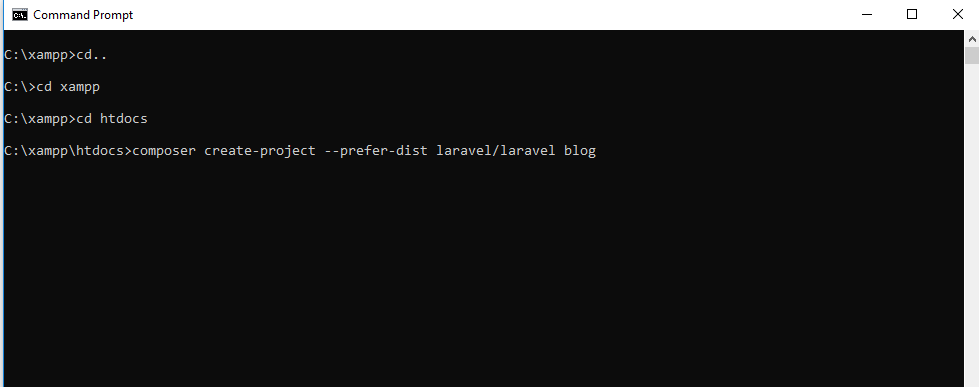

Last Updated: 15-07-2019
Step 1. Install brew.
Open Terminal and copy and paste the code below.
$ /usr/bin/ruby -e "$(curl -fsSL https://raw.githubusercontent.com/Homebrew/install/master/install)"
This will install homebrew on your mac. Then you can check the version of brew by using the following command.
$ brew -v
Output: To test for a successful installation
$ brew -v
Homebrew 2.1.7
Homebrew/homebrew-core (git revision 0737; last commit 2019-07-15)
Step 2. Install PHP via Homebrew
In the terminal type the following command to install node.
$ brew install php
If everything installed successfully then you can type in the following command in the terminal to check the PHP version
$ php -v
Output: To test for a successful installation
$ php -v
PHP 7.1.23 (cli) (built: Feb 22 2019 22:19:32) ( NTS )
Copyright (c) 1997-2018 The PHP Group
Zend Engine v3.1.0, Copyright (c) 1998-2018 Zend Technologies
Step 3. Installing Composer.
Run the commands below in terminal in order to install composer.
$ php -r "copy('https://getcomposer.org/installer', 'composer-setup.php');"
To download the current the installer to the current directory.
$ php -r "if (hash_file('sha384', 'composer-setup.php') === '48e3236262b34d30969dca3c37281b3b4bbe3221bda826ac6a9a62d6444cdb0dcd0615698a5cbe587c3f0fe57a54d8f5') { echo 'Installer verified'; } else { echo 'Installer corrupt'; unlink('composer-setup.php'); } echo PHP_EOL;"
To verify the installer SHA-384.
$ php composer-setup.php
To run the installer.
$ php -r "unlink('composer-setup.php');"
To remove the installer.
Step 4. Install Laravel
Write the command below to install laravel.
$ composer global require laravel/installer
This will take a bit of time to install.
Once this process is finished, we need to set up environment variable $PATH.
$ nano ~/.bash_profile
Then write down this line in the bash_profile
$ export PATH=~/.composer/vendor/bin:$PATH
Lastly, Test see if Laravel is installed by simply typing laravel and enter.
$ laravel
Output: To test for successful installation.
$ laravel
Laravel Installer 2.0.1
Usage:
command [options] [arguments]
Options:
-h, --help Display this help message
-q, --quiet Do not output any message
-V, --version Display this application version
--ansi Force ANSI output
--no-ansi Disable ANSI output
-n, --no-interaction Do not ask any interactive question
-v|vv|vvv, --verbose Increase the verbosity of messages: 1 for normal output, 2 for more verbose output and 3 for debug
Available commands:
help Displays help for a command
list Lists commands
new Create a new Laravel application.
Last Updated: 15-07-2019
Step 1. Install Chocolatey
First install Chocolatey by following the directions on this link
https://chocolatey.org/docs/installation
Step 2. Install PHP via Chocolatey.
To install PHP, run the following command from the command line or from PowerShell:
C:/ choco install php
To upgrade PHP, run the following command from the command line or from PowerShell:
C:/ choco upgrade php
Step 3. Install Composer via Chocolatey.
To install Composer Setup, run the following command from the command line or from PowerShell:
C:\ choco install composer
To upgrade Composer Setup, run the following command from the command line or from PowerShell:
C:\ choco upgrade composer
Step 4. Installing Laravel using Composer.
Open command prompt & type cd C:\xampp\htdocs
Then type the following.
C:\ composer create-project --prefer-dist laravel/laravel blog

Step 5. Start development server.
C:\ php artisan serve
If you want to run the project different port so use this command
C:\ php artisan serve --port=8080
You have successfully install laravel on windows , Now Go to the browser and type:
URL: http://localhost:8000/blog